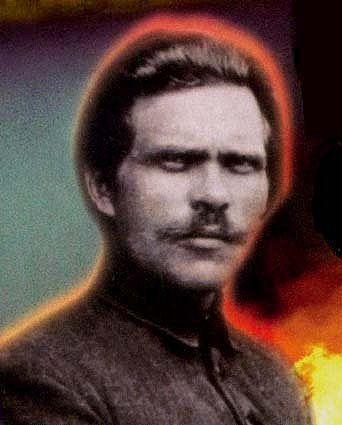
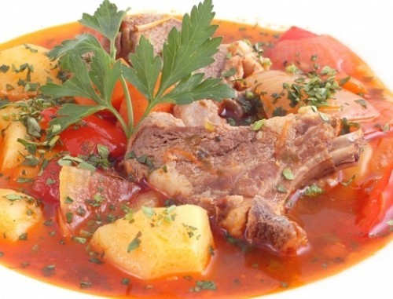
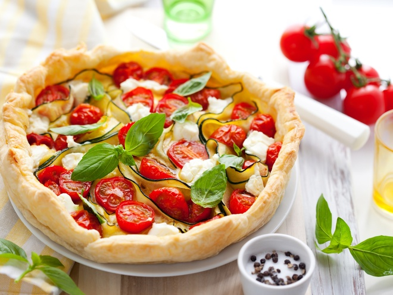

Здраствуйте товарищи!Мы, это то что мы едим,
от того как сбалансировано наше питание зависит наше здоровье,поведение,вся
наша жизнь с её бесконечными порой безжалостными поворотами судьбы.И только
когда еда даёт нам силу мы сможем гордо всё преодолеть!
Ведь все помнят:Человек это звучит гордо!
- Он живёт настоящим, верит в
будущее,и гордится своим великим прошлым.Ведь ещё Александр Пушкин твердил что
Неуважение к предкам есть первый признак дикости и безнравственности.
История даёт нам знания о наших предках.Через века и тысячелетия мы видим чему мы
можем у них поучится,а чего повторять не стоит.Поэтому история это-ключ к пониманию
социально-экономических проблем.Так кем же были наши предки?Чем они питались!?Что
давало им силы на великие свершения!Попробовав блюда с их праздничных столов мы
почувствуем себя частью той эпохи в которой жили и творили наши любимые исторические
персонажи.Составим первое и единственное историческое меню.Совместим блюда разных
эпох и народов мира.При этом наши блюда не смотря на их разнообразность будут дополнять
друг-друга,дабы дать нам силы и удовольствие а не растройство желудка.А начнём мы пожалуй
с первой половины XXвека!
Украина;1 октября,1918
Вашему вниманию олицетворение Украины Батько Махно!

После большевисткого гос-переворота 1917-го года между Германией и захваченой
крассными Россией по инициативе Леннина был подписан позорный Бресткий мир по
которому Украина была передана Германии и Австро-Венгрии как ненужная изпользованая
вещь.Однако украинцы небыли бы украинцами если-бы не вступили в неравный бой с
двумя империями не прося помощи у так называемого старшего брата
Как
говорится, без сопливых разберёмся
Всю весну 1918-го года, сформировавшись
в боевые, чем попало воружёные разрозненые отряды, украинцы держали оборону,а
когда страна всё-же была окупирована эти отряды стали партизанскими.Обьеденить
их для великих битв суждено было Нестору Ивановичу Махно.А начолось всё со
встречи его отряда с отрядом
Федоса Щуся в селе Дибривки
Александровског уезда(ныне Запорожской области).Встреча было более чем радостной,
жители села в захлёп слушали командиров своих освободителей.Однако соловья как
известно
баснями не накормишь
! По такому случаю чтобы накормить бойцов
было зарезано несколько баранов и в огромном котле был приготовлен настоящий,
Козацский суп из баранины
а козацким он стал во времена Великого Богдана
Хмельницкого в XVII веке, когда боротся с Польской шляхтой наряду с украинцами
вышли крымские татары.Имено они научили козаков правильно питатся в длительных
походах.Подкрепившись махновские козаки ещё долго отбивали посёлок у врага
пока окупант буквально не окружил их артелерией.Однако,махновцам удалось
вырватся с минимальными потерями.А их командир за мудрое руководство,мужество,
героизм и любовь к Родине был назван как и его предшественник гетьман Хмельницкий,
по козацким традициям Батьком.Так как-же выглядит и готовится это мужское первое
блюдо,в наше время на современой удобной кухне!?

Кроме самой баранины, нам понадобятся простые и доступные ингридиенты а именно..
- 750гкартофеля
- 500г баранины
- 4 перца-горошка
- 3 моркови
- 2 лука-порея
- 2 корня петрушки тонких и зубчика чеснока,
- по 1 лавровому листу и луковице
- 1 пучок сельдерея
- ½ ч.л. тмина, тимьяна и майорана, перец, соль
Промытое и подготовленное мясо выложить в кастрюлю, влить воду так, чтобы она его
только-только покрывала, довести до кипения. Мелко нарезать коренья для супа, чеснок и лук, положить вместе с горошинками перца и лавром в суп, подсолить,
проварить без крышки 1ч на медленном огне. Достать мясо из бульона, нарезать кубиками.
Бульон через сито протереть. Картофель очистить, нарезать мелко коренья петрушки,
порей и морковь, положить в протертый бульон, заправить его тмином, майораном и
тимьяном, полчаса проварить, положить в суп мясо, прогреть 10мин, подать к столу.
1918-1921-год
Из искры разгорелось пламя...Немцы же проиграв 1-ю мировую войну ушли восвояси.Но на этом
естественно всё не закончилось.Беда не приходит одна. Под каким только предлогом не пытаются ограбить украинца.Под именем Батька обычные работяги обьеденились в Великую
Революционую Повстанческую Анархическую Армию Украины! С лозунгом
Бей белых,пока не покрасснеют- Бей
крассных пока не побелеют!
Было защищено от паразитов пол страны,включая Крым кореное население которого и поведало козакам рецепт выше описаного супа.Однако их ждала
тяжёлая болезнь под названием тиф и тотальное предательство крассновыдуманых, с которыми Нестор был вынужден трижды вступать в союз,ради родной отчизны.Увы,всё это покосило
стотысячную армию им.Батька Махно.Сам Махно чудом выжил,но был вынужден емигрировать 21 августа 1921-го года,после чего осел в Париже.
Здесь во Франции,бывший Главнокомандующий,великий полководец,признаный историками гений партизанской войны- вынужден был сводить концы с концами.
Я в бой бросался с головой,
Пощады не прося у смерти,
И не виновен, что живой
Остался в этой круговерти.
Мы проливали кровь и пот,
С народом откровенны были.
Нас победили. Только вот
Идею нашу не убили.
Пускай схоронят нас сейчас,
Но наша Суть не канет в Лету,
Она воспрянет в нужный час
И победит. Я верю в это!
Эти строки Нестор Иванович писал тяжело раненый,покидая родную землю в 1921 году!
Париж;20-ые-30-ые годы прошлого столетия;
Киш-это не только,популярная рок-група(сокр.абрев. от названия"Король и Шут"
которая кстати имеет в своем реппертуаре песню о Махно под названием"Тринадцята Рана") но
и один из самых крутых пирогов в мире! Он входит в десятку лучших блюд Француской
и мировой кухни! Свою популярность он приобрёл когда появились авиаперелёты.Французы
брали его с собой в дорогу,благодаря его компактности и питательности. И так распространили
его на весь мир,сделав блюдом богачей. А вот в те годы француз ел это универсальное блюдо
чтоб чисто подкрепится утром в обед и вечером.Универсальность пирога заключается в том что
его вкусно есть как в горячем так и холодном виде в любое время как уже сказано. А пришло
это блюдо во Францию от немцев с которыми украинцам к великому сожалению пришлось повоевать..
Родина Киша Лотарингия,французский регион граничащий с Германией,кореным населением там являются немцы. Во времена изобретения блюда,именовались эти земли
Герцогство Лотарингия
Практичные немцы после изготовления и запекания обычного хлеба, просто не хотели,выбрасывать остатки теста а смешивали его с заливкой из яиц и молока. Французы же заменили тесто пирога на более лёгкое песочное и добавили
в него сыр. Также французы добавили к немецкому слову киш(сокр.от kuchen-торт;с тех времён торты перестали быть только сладкими
)французкое Лоран,по имени Родины пирога.Поэтому полным названием пирога стало "Киш Лоран".В оригинальном рецепте в начинку добавляется копчёная грудинка.Однако,существуют сотни других более экономных вариантов,их и использовали честные но бедные французские трудящиеся
в ряды которых и попал,легендарный Батька продолжая верить и агитировать, за идеи равенства и братства, обедая с товарищами за одним столом.На нашем столе уже стоит суп
из баранины поэтому мясная начинка, нам уже не нужна.Нам подойдёт "Киш с томатами, базиликом и сыром",который согласитесь напоминает пиццу.Итак приступим к готовке.

- Нам понадобится:
- 250 г просеянной муки
- щепотка соли
- 125 г охлажденного сливочного масла, натертого на крупной терке
- 1 охлажденное яйцо
- 3 ст. ложки ледяной воды
- Для начинки:
- 300 г томатов-черри
- 300 мл жирных сливок
- 2 охлаждённых яйца
- пучок зелёного базилика
- 50 г тёртого сыра пармезан
- немного оливкового масла
- соль,перец по вкусу
Приготовьте тесто: муку смешайте с солью, добавьте хлопья масла,яйцо,воду и соль
(можно использовать кухонный комбайн с насадкой-ножом).Скатайте из теста шар,обе-
рните пищевой пленкой, уберите на 1 час в холодильник.Разогрейте духовку до темпе-
ратуры 180°С. Тесто раскатаем,выложим в круглую форму с бортиками, проколим вилкой.
Томаты разрежем пополам, выложим в другую огнеупорную посуду, посолим, поперчим,сбрызним маслом. Одновременно с коржом запекаем 25 минут. Пока запекается корж и помидоры,
делаем заливку: смешиваем взбитые яйца и сливки, солим, добавляем рубленый базилик.
Корж посыпем половиной пармезана, выкладываем красиво помидоры, заливаем яично-сливочной смесью, еще раз посыпаем оставшимся сыром. Выпекаем 20-25 минут.Подаётся пирог со
свежими листиками базилика.
Вот так на нашем столе теперь;-татарская,украинская,французская и немецкая кухня!
Вы можете выпить под неё бокал французского крассного полусухого вина,а можете махнуть чарку
украинской горилки.Главное что беседа за столом будет насыщена не только обсуждением рецептов,
но их инстереснейшей пред-историей.Ведь что ещё делать за столом, как не травить всепоглощающую
ИСТОРИЮ...
Bon Apety!